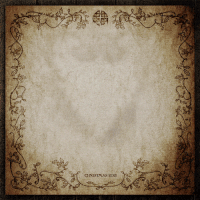
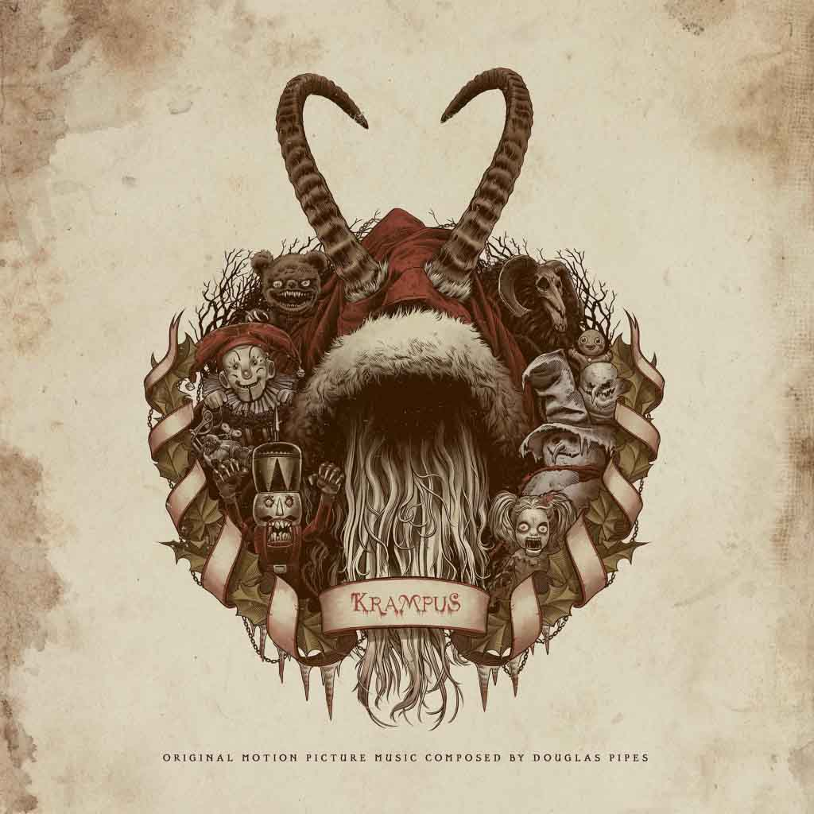
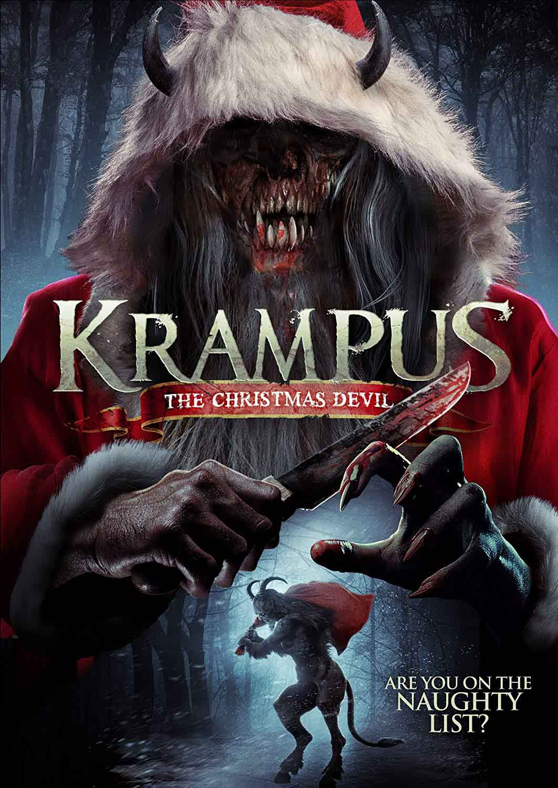
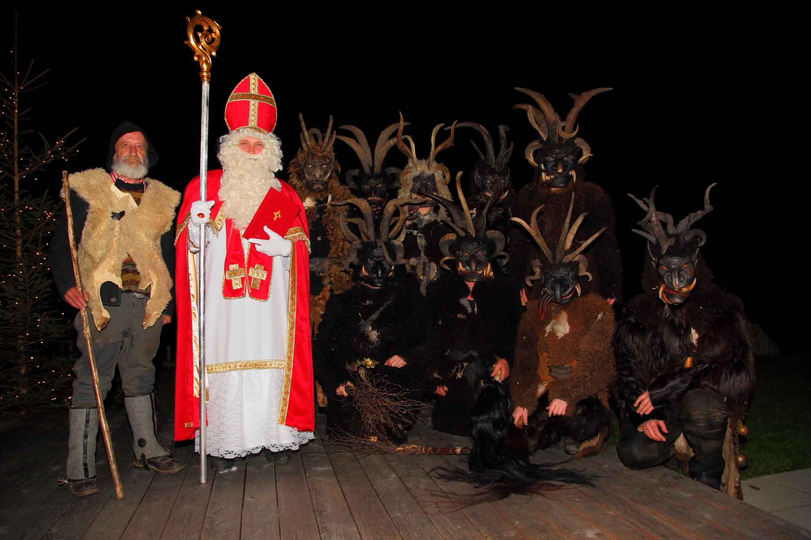
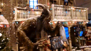
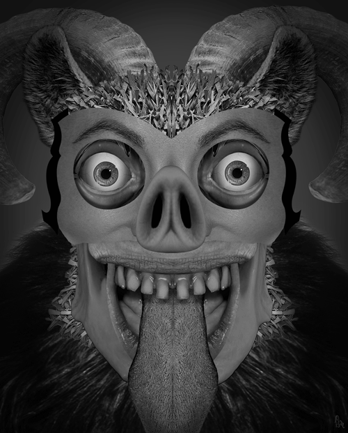
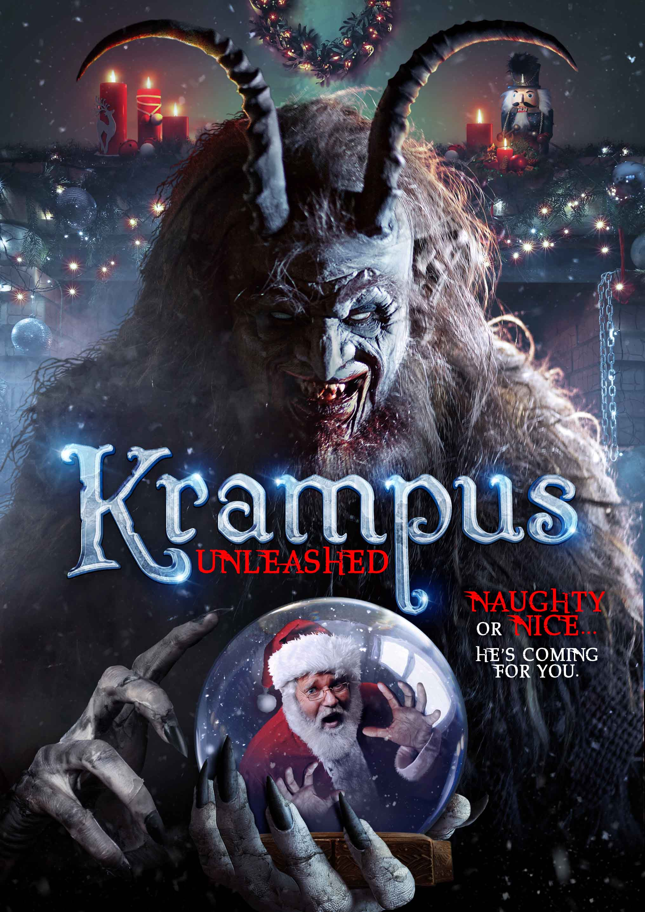

In fact, Krampus' roots have nothing to do with Christmas. Instead, they date back to pre-Germanic paganism in the region. His name originates with the German krampen, which means "claw", and tradition has it that he is the son of the Norse god of the underword, Hell. Krampus is the evil demon anti-Santa, or may be his evil twin. Krampus Night is celebrated on December 5, the eve of St.Nicholas Day in Austria other parts of Europe Public celebrations that night have many Krampus walking the streets , looking for people to beat.

Krampus
As a tool to encourage good behaviour in children, Santa servess as the carrot, and Krampus is the stick. Krampus is the evil
demon anti-Santa, or may be his evil twin. Krampus Night is celebrated on December 5, the eve of St. Nicholas Day in Austria
and other parts of Europe. Public celebrations that night have many Krampuses walking the streets, looking for people to beat.
Alcohol is also involved. Injuries in recent years have led to some reforms, such as requiring all Krampuses to wear number so
they may identified in case of overly violent behavior.

Krampus may look like a devil, like a wild alpine beast, depending on what materials are available to make a Krampus constume. In modern times, people can spend as much as they like to become the beast Krampus around- and the tradition is spreading beyond Europe. Many cities in America have their own Krampus Nights now. In Central European Folklore, Krampus is a horned, anthropomorphic figure described as " half-goat", "half-demon", who during the Chirstmas season, punishes children who have misbehaved, in contrast with Saint Nicholas, who rewards the well-behaved with gifts. Krampus is one of the companions of Saint Nicholas in several regions including Austria, Bavaria, Croatia, Czech Republic, Hungary, Northern Italy including South Tyrol , Slovakia, and Slovenia. The origin of the figure is unclear; some folklorists and anthropologists have postulated it as having pre-Christian origins. In traditional parades and in such events as the Krampuslauf (English:Krampus run), young men dressed as Krampus participate; such events occur annually in most Alpine towns. Krampus is featured on holiday greeting cards called Krampuskarten.

The legend is part of a centuries-old Christmas tradition in Germany where Christmas celebration begin in early December. Krampus was created as a counterpart to kindly St.Nicholas, who rewarded children with sweets. Krampus, in contrast, would swat "wicked" children and take them away to his lair. Klaubauf Austria, while Bartl or Bartel, Niglobartl, and Wubartl are used in the southern part of the country. In most parts of Slovenia, whose culture was greatly affected by Austrian culture, Krampus is called parkelj and is one of the companions of Miklavz, the Slovenian from of St.Nicholas.

The Bad Santa (or) Krampus
Bad Santa, meet Krampus: a half-goat
, half-demon, horrific beast who literally beasts people into being nice and not naughty.
Krampus isn't exactly the stuff of dreams: Bearing horns,
dark hair, and fangs, the anti St.Nicholas
comes with a chain and bells that he lashes about, along with a bundle of birch sticks meant to swat naughty children. He then
hauls the bad kids down to the underword. (Read "How Krampus, the Christmas 'Devil', Become Cool.")

Krampus, whose name is derived from the Germen word Krampen, meaning claw, is said to be the son of Hell in Norse mythology. The legendary beast also shares characteristics with other scary, demonic creatures in Greek mythology, including satyrs and fauns. The legend is part of a centuries -old Christmas tradition in Germany, where Christmas celebrations begin in early December. Krampus was created as a counterpart to kindly St.Nicholas, who rewarded children with sweets. Krampus, in contrast, would swat "wicked" children and take them away to his lair.
According to folklore, Krampus purportedly shows up in towns the night before December 6, known as Krampusnacht or Krampus Night. December 6 also happens to be Nikolaustag or St.Nicholas Day, when German children look outside their door to see if the shoe or boot they'd left out the night before contains either presents (a reward for good behavior) or a rod (bad behavior). Krampus's frightening presence was support for many years- the Catholic Church forbade the raucous celebrations, and fascists in World War 2 Europe found Krampus despicable because it was considered a creation of the Social Demoncrats.

Modern History
In the aftermath of the 1923 election in Austria, the
Krampus tradition was prohibited by the Dollfuss regime under the
Fatherland's Front and the Christmas Social Party. In the
1950s, the government distributed pamphlents titled "Krampus Is an Evil Man
". Towards the end of the century, a popular resurgence of Krampus celebrations occurred and continues today. The
Krampus tradition is being revived in Bavaria as well, along with a local artistic tradition of hand
-carved wooden masks.
This site doesn't carry ads or guest post/articles. That's about Information.